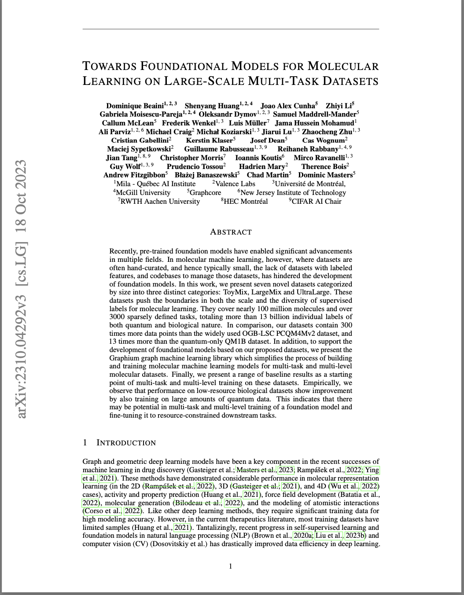

This paper introduces seven novel datasets and the Graphium library for advancing molecular machine learning.
Read the full paper on arXivKey Contributions
- Presented seven novel datasets for molecular machine learning, categorized as ToyMix, LargeMix, and UltraLarge.
- The datasets cover nearly 100 million molecules and over 3000 sparsely defined tasks, totaling more than 13 billion individual labels of both quantum and biological nature.
- Compared to existing datasets, ours contain 300 times more data points than the OGB-LSC PCQM4Mv2 dataset, and 13 times more than the quantum-only QM1B dataset.
- Introduced the Graphium graph machine learning library to simplify the process of building and training molecular machine learning models for multi-task and multi-level molecular datasets.
- Provided baseline results for multi-task and multi-level training on these datasets.
- Observed that performance on low-resource biological datasets improves by also training on large amounts of quantum data, indicating potential in multi-task and multi-level training of a foundation model and fine-tuning it to resource-constrained downstream tasks.
- Made the Graphium library publicly available on Github and provided dataset links in Part 1 and Part 2.